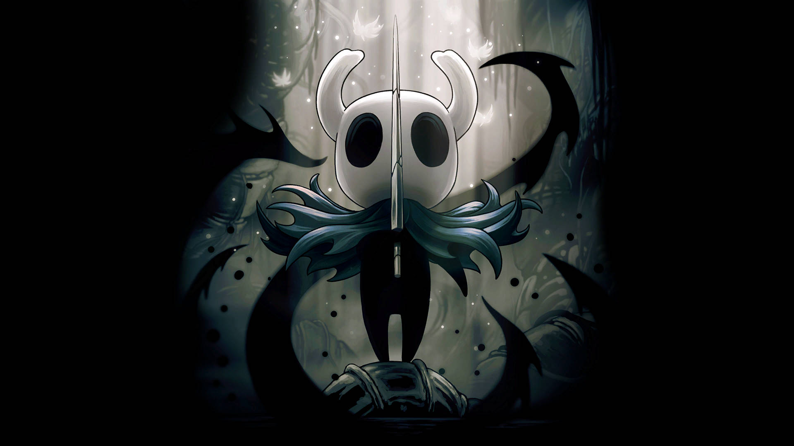

Добро пожаловать!
Hollow Knight — это атмосферная метроидвания от студии Team Cherry, вышедшая в 2017 году. Игра рассказывает историю загадочного рыцаря, исследующего разрушенное королевство Hallownest.

Предыстория
Королевство Халлоунест когда‑то процветало под властью Лучезарности, божества света, которое управляло разумом насекомых. Позже появился Бледный Король, освободивший жителей от её контроля и построивший цивилизацию с городами, культурой и технологиями. Однако Лучезарность, забытая и отвергнутая, породила Инфекцию, которая стала разрушать разум и тела существ.
Катастрофа
Чтобы остановить болезнь, Бледный Король создал Сосуды из энергии Пустоты. Лучшим из них стал Полый Рыцарь, заключённый в Черное Яйцо и охраняемый тремя Грезящими. Но даже он оказался несовершенным, и Инфекция продолжила распространяться, погружая Халлоунест в хаос.
Основной сюжет
Игрок управляет Рыцарем, таинственным существом, прибывшим в руины Халлоунеста. Его путь — исследовать королевство, сражаться с заражёнными врагами и раскрывать тайны прошлого. В конце путешествия он сталкивается с Полым Рыцарем, чтобы решить судьбу королевства: продолжить цикл страданий или попытаться разорвать его.
Философия и смысл
Сюжет Hollow Knight — это история о жертвенности, борьбе с неизбежностью и поиске смысла в мире, где надежда почти угасла. Каждый персонаж отражает тему выбора между коллективным разумом и индивидуальностью, а финал игры зависит от действий игрока.